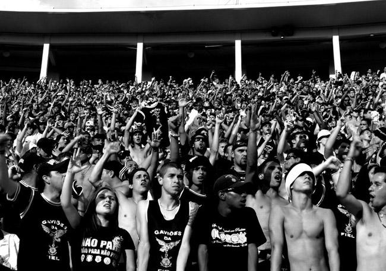
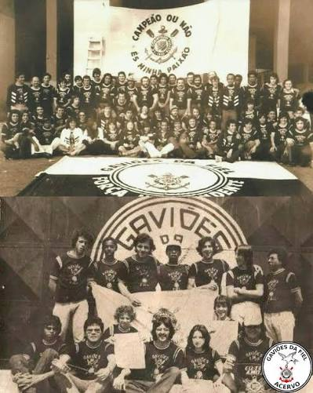
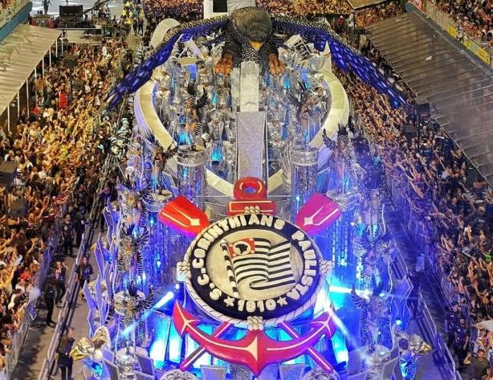
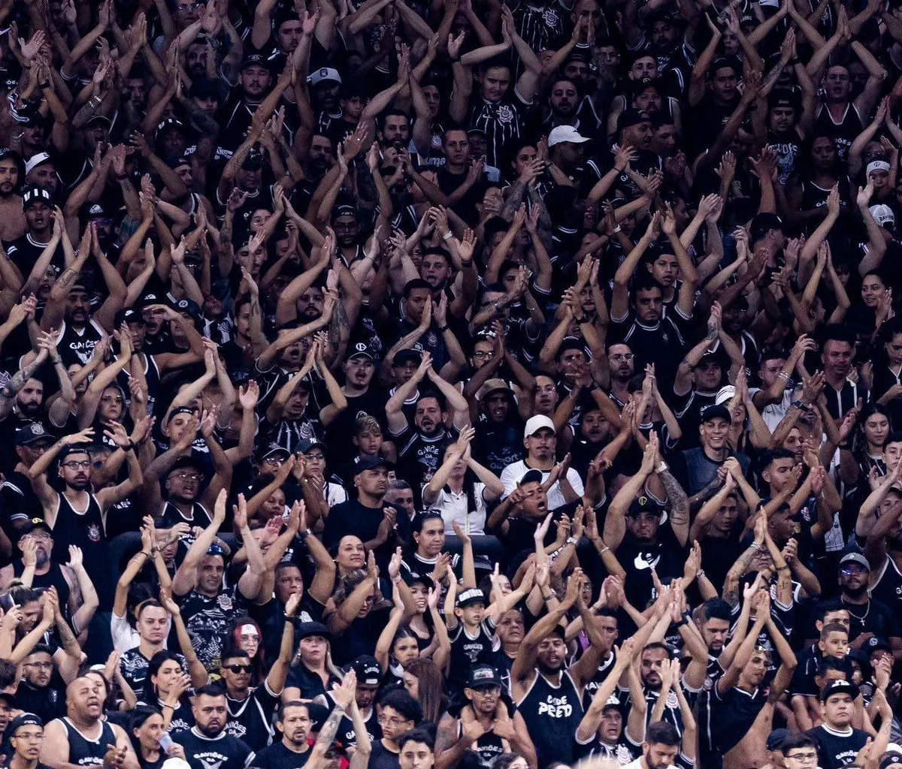

ALMA DA FIEL / GAVIÕES DA FIEL
Muito além das arquibancadas
Uma história de paixão, identidade e participação na trajetória do Corinthians..
Uma história que começou em 1969
A história dos Gaviões da Fiel começou em 1º de julho de 1969, quando um grupo de corinthianos decidiu se organizar para defender os interesses do Corinthians e participar mais ativamente da vida do clube. A iniciativa nasceu de uma torcida que não queria apenas acompanhar os jogos, mas também ter voz nas decisões e nos caminhos da instituição. Desde sua fundação, os Gaviões construíram uma trajetória marcada pela independência, pelo envolvimento com o clube e pela força de seus torcedores.

Uma voz que ecoa nas arquibancadas
Nas arquibancadas, os Gaviões da Fiel representam uma das expressões mais marcantes da paixão corinthiana. Bandeiras, instrumentos, cantos e manifestações coletivas transformam cada partida em uma demonstração de pertencimento. Ao longo das décadas, a torcida construiu uma identidade própria, presente nos momentos de conquista e também nos períodos mais difíceis do clube. É nesse compromisso de apoiar, acompanhar e cobrar que ganha significado seu lema: Lealdade, Humildade e Procedimento.
Além do futebol
A história dos Gaviões não se limita aos estádios. Em 1975, a agremiação deu início à sua trajetória no Carnaval com a criação de seu bloco carnavalesco, levando as cores e a identidade corinthiana para a avenida. O crescimento dessa iniciativa transformou os Gaviões também em uma escola de samba, conquistando espaço e reconhecimento no Carnaval paulistano. Além da cultura, a organização desenvolve atividades sociais e culturais, ampliando sua presença na comunidade.

O significado de ser Fiel
Ser Fiel representa fazer parte de uma história construída coletivamente, que atravessa gerações e ultrapassa os limites do futebol. Nos Gaviões, essa identidade se manifesta na dedicação ao Corinthians, na preservação de suas tradições e na união de pessoas que compartilham os mesmos valores. Entre arquibancadas, quadras de samba e iniciativas sociais, permanece um sentimento que se renova com o tempo: o orgulho de pertencer à nação corinthiana.
